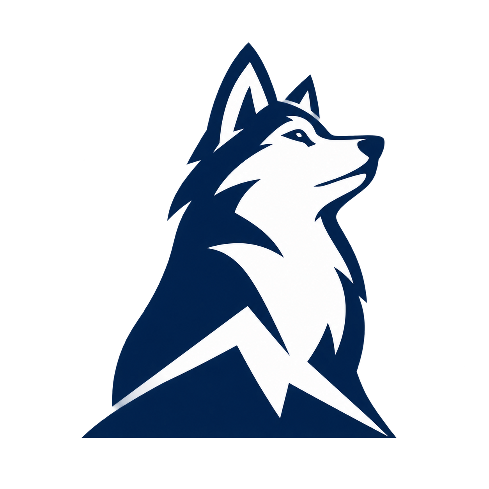
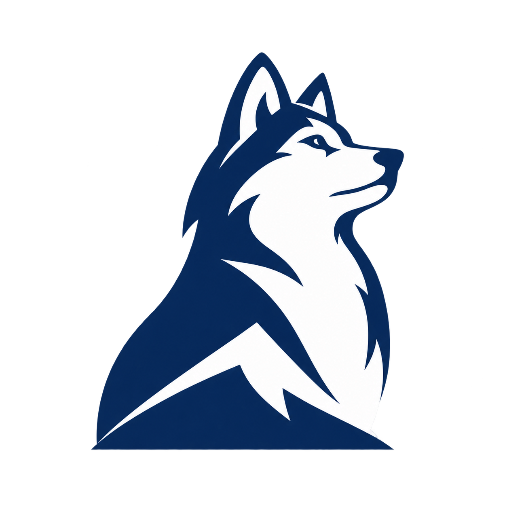
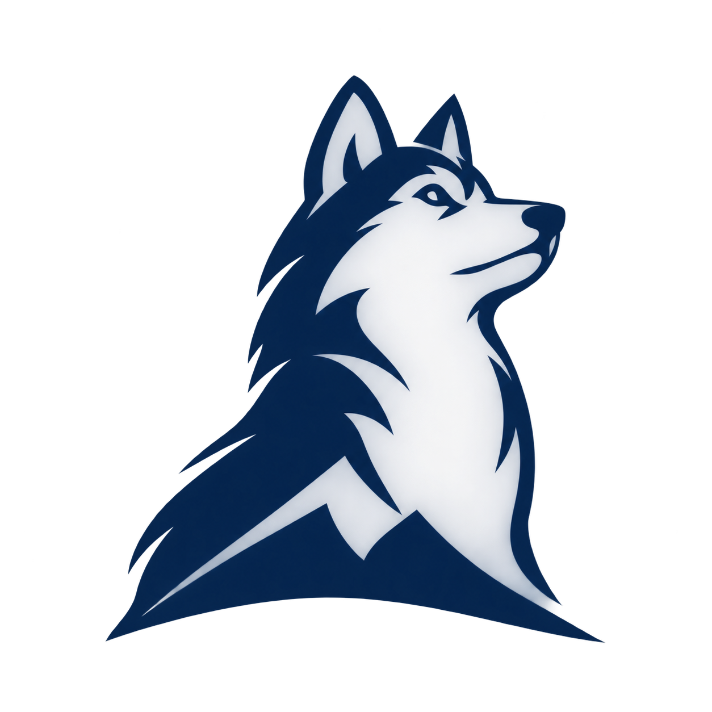

01
Curved profile
Long muzzle and upright neck. A white cheek cut gives the head shape; the summit is omitted in the tiny mark.
Actual display sizes · light surface
16px32px
Inspect enlarged geometry


Baltor · based on your mature, proud-dog references
Lifted chin, longer muzzle and two-tone negative space. These SVG families have separate drawings for 16 and 32 pixels. Judge the first rows at their native size; the enlarged views are optional.
01
Long muzzle and upright neck. A white cheek cut gives the head shape; the summit is omitted in the tiny mark.
Actual display sizes · light surface
02
Raised chin above a broad ledge. Straighter geometry and a visible summit keep the original idea in the small mark.
Actual display sizes · light surface
03
One outer profile and one broad white cut. Removes eyes and inner ears to test whether the silhouette carries the identity.
Actual display sizes · light surface

At 16 pixels, the long muzzle and ears do most of the recognition work. None of these small marks tries to preserve the full dog, paws, tail and ice scene. The second keeps a summit cue. The dark rows use explicit reversed SVGs.
Generated raster explorations for the larger brand mark. They remain more detailed than the tiny SVGs and are not favicon files; the brush study also contains shading that would need flattening in a final vector.



Design notes · Saved image-generation prompts · Earlier front-mask micro study · Earlier raster concepts